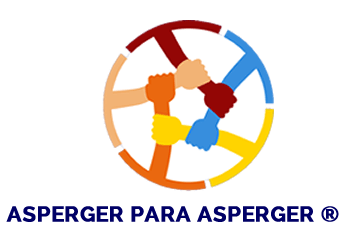

←
Volver al inicio

💼
Entorno Académico y Laboral
⏱️ Gestión del Tiempo Laboral
Técnicas Pomodoro, estimación realista y manejo de multitarea
📍
1 / 100
⭐
0 puntos
🎯
0% aciertos
Progreso de sesión
📋 Situación
Caso #1
←
Anterior
Siguiente
→
🔀
Mezclar
🔄
Reiniciar
💡
Consejo: Aplica esta habilidad en un ejemplo real y registra cómo te funcionó.